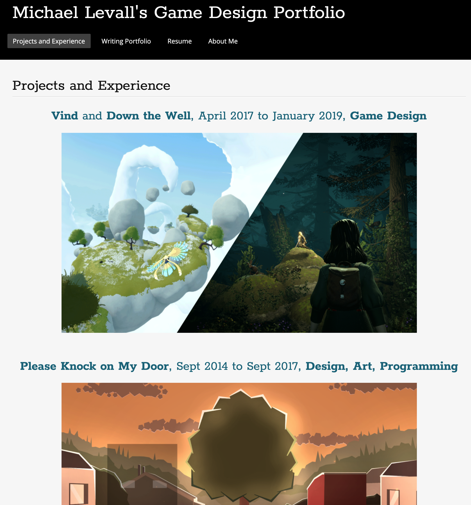
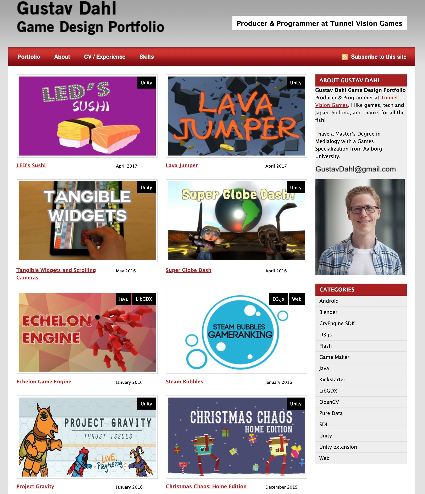

AryShirazi
AryShirazi
The first site is Ary Shirazi's site. The homepage is flashy and provides a bar to access Shirazi's other works. The organization is clean, and is easy to navigate.
DavidShaverDavid Shaver's site is simple, a bit old fashioned, but it is effective. The top bar lists his works, his involvement and his resume and bio. The largest complaints are the old layout of the site, and the use of unfinished games in his portfolio.
JayVanHuttenThis website has a particularly interesting layout, the main body giving images and text related to the page, and a bar across the bottom that has icons for all the games that Jay has worked on. While many of these games look a bit cheap, the layout of the site itself is excellent, with tags for the work theyperformed for each game.
 MichaelLevallThis site is simple, nothing too special, but it gets the job done. It has images for each game listed, a list of related dates, and names. Across the top more information related to Michael's Writing Portfolio and Resume. While the site is not very special, like David Shaver's, it is simple and effective.
 GustavDahlWhile I am not a fan of the color scheme and the material being listed, the website itself is effective in showing Gustav's work and previous experience. That being said, the color and layout of the site reminds me of an old, outdated library site, the kind that has lttle style and is often navigatedaway from quickly.